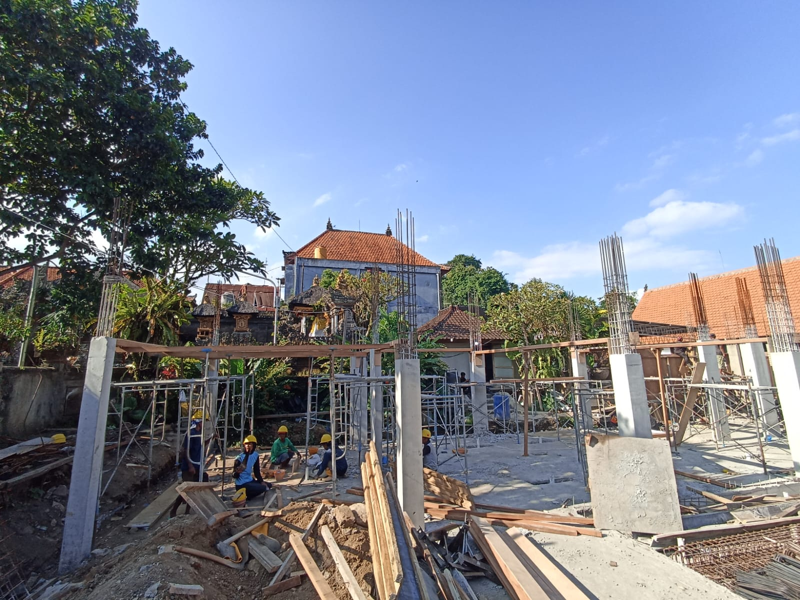
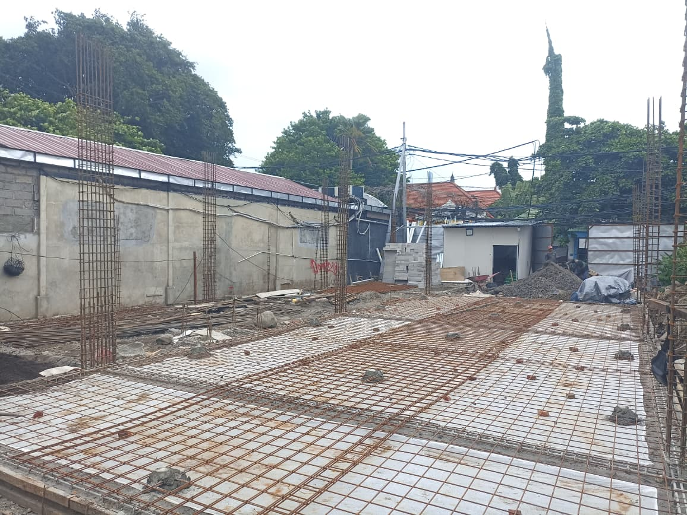
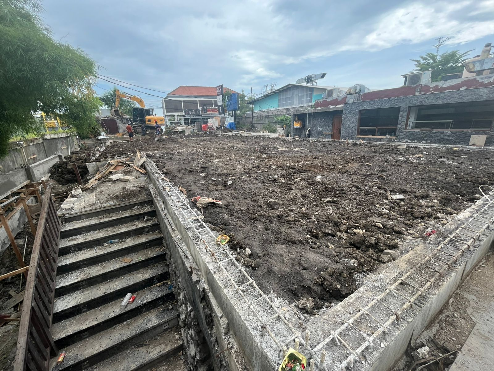
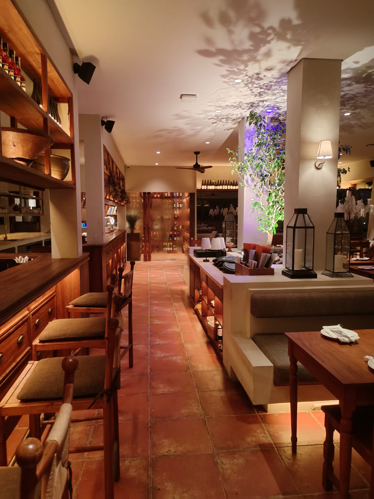
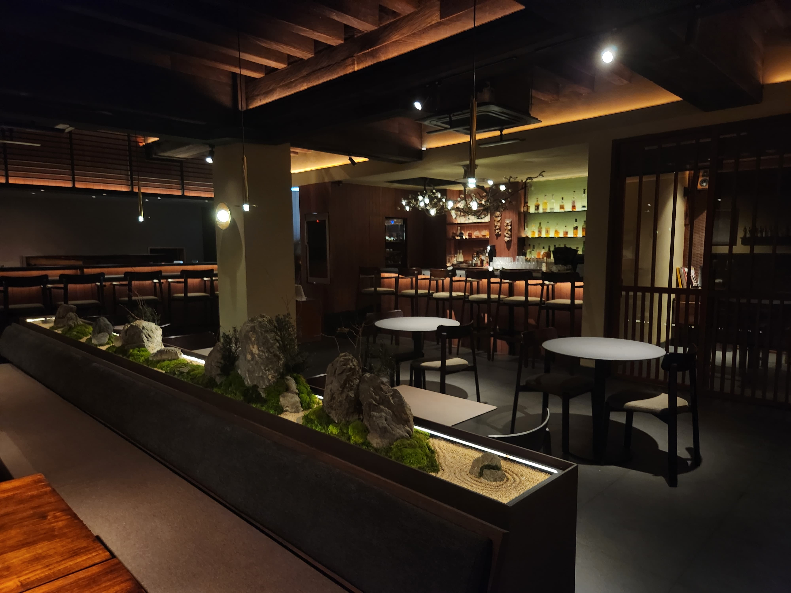
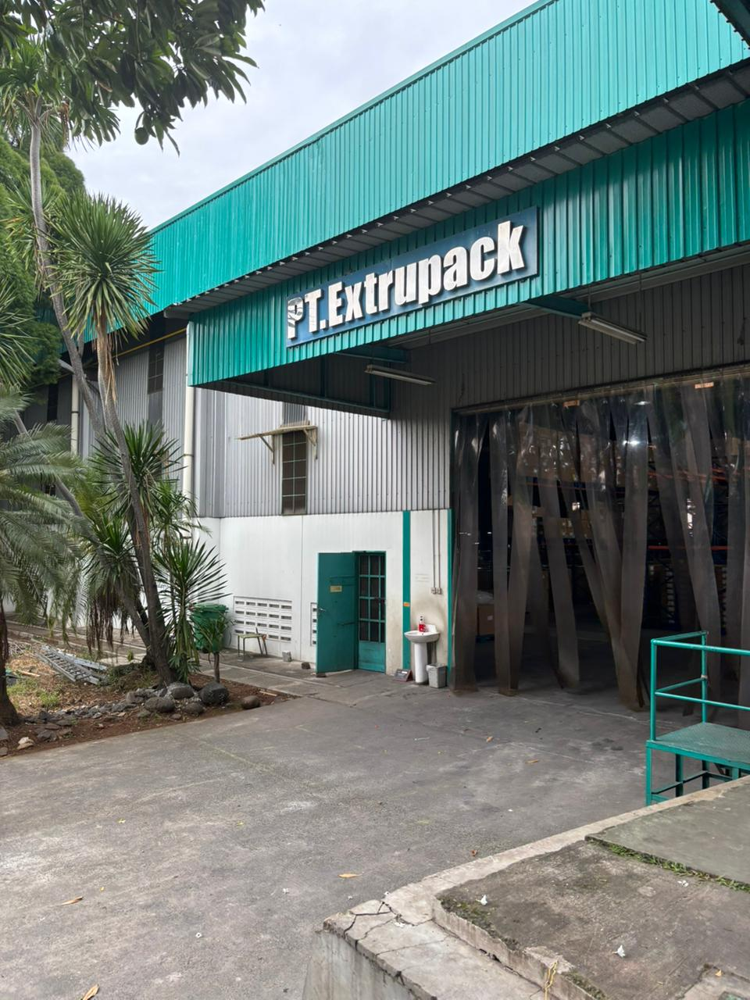

Solusi menyeluruh untuk pembangunan, renovasi, dan perawatan properti; dikerjakan secara profesional, terstruktur, dan tepat waktu.

Kami mendokumentasikan setiap proyek dari awal hingga akhir. Mencakup proses pengerjaan dan hasil akhir di berbagai lokasi, ini sebagai bentuk profesionalisme dan integritas kami.

Pembangunan Restaurant: Struktur, Arsitektur, MEP, dan Furniture

Pembangunan Restaurant: Pekerjaan Struktur, Arsitektur, MEP, dan Furniture

Pembangunan Bar & Lounge: Pekerjaan Arsitektur, MEP, dan Furniture

Pembangunan Restoran Baru

Pembangunan Restoran Baru

Pembangunan Gudang dan Ruang Kantor

Go-Mandor adalah platform jasa konstruksi terintegrasi yang melayani proyek dari skala residensial hingga komersial dan enterprise. Baik itu pembangunan baru, renovasi menyeluruh, renovasi ringan, seluruh kebutuhan konstruksi Anda dikelola dalam satu ekosistem yang efisien, transparan, dan terpercaya.
Solusi perawatan dan perbaikan terpadu untuk memastikan operasional Anda tetap optimal.
Dari konsep hingga konstruksi, kami hadirkan solusi yang terukur dan tahan lama.
Manajemen tepat waktu, pengendalian biaya, hasil sesuai target.


Perbaikan dan renovasi rumah jadi mudah. Mulai dari AC bocor, lampu mati, wastafel mampet, ganti keramik, hingga cat tembok dan lain sebagainya.
Hubungi sekarang
Go-Mandor Prioritas adalah kebutuhan skalabilitas konstruksi B2B—dari proyek ringan, renovasi, hingga pembangunan skala besar.
Hubungi sekarang

Kami merasa terhormat telah dipercaya oleh keluarga, bisnis, dan pemilik properti di berbagai wilayah. Setiap klien adalah cerita, dan setiap proyek adalah kehormatan bagi kami.
Go-Mandor didukung oleh tenaga ahli berpengalaman yang telah menyelesaikan berbagai proyek dengan hasil memuaskan. Kepercayaan banyak klien menjadi bukti kualitas layanan yang konsisten dan profesional.
0+
Tenaga Ahli
0+
Proyek Selesai
0+
Dipercaya Klien
“Kami telah membangun dan dipercaya oleh masyarakat Indonesia sejak 2019. Dan kami akan terus berinovasi dan berkembang untuk masa depan lebih baik diindustri konstruksi.”
#KontraktorAndalanAnda
Berlangganan newsletter Go-Mandor. Dapatkan informasi terbaru, tips manajemen proyek, dan update layanan langsung di inbox Anda.

Bisnis yang skalabel dengan dampak sosial yang nyata!
Dengan pengalaman bertahun-tahun di industri konstruksi, pendiri kami menyadari beberapa masalah mendasar yang sudah lama membutuhkan perubahan. Kesulitan besar dalam menemukan tukang yang berkualitas dan dapat diandalkan, serta pendapatan yang sangat rendah bagi para pekerja keras, menjadi dua hal utama dalam daftar tersebut.
PT Niaga Makmur Berjaya, melalui aplikasi seluler sederhana bernama Go-Mandor, menghubungkan konsumen dengan tukang. Platform daring kami hadir untuk meningkatkan taraf hidup para tenaga kerja (tukang) sekaligus menyelesaikan masalah yang meresahkan konsumen dalam menemukan tukang yang tepat untuk setiap pekerjaan. Sejak diluncurkan pada Oktober 2019, Go-Mandor telah mengalami pertumbuhan yang pesat dan membuktikan dirinya sebagai solusi yang sangat dinantikan.
Dengan beragam layanan yang tersedia dalam satu platform, pengguna dapat memilih layanan yang tepat untuk setiap pekerjaan yang mereka butuhkan, baik itu pekerjaan konstruksi, perbaikan, maupun perawatan. Survei lokasi untuk semua pekerjaan diberikan secara gratis dan tidak mengikat.
Unduh aplikasi kami yang ramah pengguna dari Google Play Store dan App Store, dan serahkan kebutuhan tukang Anda kepada Go-Mandor.
Go-Mandor Melayani Semua Skala Proyek
Go-Mandor adalah mitra konstruksi dan properti yang komprehensif dan inklusif. Kami memahami bahwa setiap kebutuhan konstruksi atau perbaikan—baik besar maupun kecil—memiliki tingkat kepentingan dan urgensi yang sama.
Kami memiliki pengalaman dalam menangani proyek skala besar dengan tingkat kompleksitas tinggi untuk korporasi, institusi, dan pengembang, seperti:
Kami juga siap membantu individu dan keluarga dalam mewujudkan atau meningkatkan ruang hunian mereka:
Kami tidak mengabaikan apa yang terlihat “kecil,” karena kami percaya bahwa pelayanan terbaik dibuktikan melalui perhatian terhadap detail dan komitmen pada proyek dengan skala apa pun. Contoh:
Solusi Pemeliharaan dan Perbaikan untuk Semua Kebutuhan Properti Anda
Go-Mandor memahami bahwa setiap properti—baik rumah tinggal, kantor, maupun fasilitas komersial—membutuhkan perawatan rutin dan perbaikan tepat waktu untuk menjaga fungsionalitas serta nilai investasinya. Kami hadir sebagai mitra terpercaya Anda dalam menangani berbagai pekerjaan perawatan dan perbaikan dengan standar kualitas tinggi.
Percayakan perawatan dan perbaikan properti Anda kepada Go-Mandor. Kami hadir untuk menjaga properti Anda tetap prima setiap saat.
Go-Mandor menyediakan layanan desain dan pembangunan terpadu untuk berbagai jenis properti, baik residensial maupun komersial. Kami menawarkan:
Percayakan desain dan pembangunan properti Anda kepada Go-Mandor, mitra terpercaya untuk mewujudkan ruang yang nyaman, aman, dan bernilai tinggi.
Go-Mandor hadir sebagai mitra terpercaya dalam mengelola setiap proyek konstruksi dan renovasi Anda. Dengan pendekatan manajemen proyek yang terstruktur dan profesional, kami memastikan setiap tahapan pekerjaan berjalan sesuai rencana, tepat waktu, dan sesuai anggaran.
Tim manajemen proyek Go-Mandor bertanggung jawab penuh atas koordinasi lapangan, pengawasan mutu, pengendalian biaya, serta komunikasi yang transparan antara klien dan tim teknis. Kami percaya bahwa keberhasilan sebuah proyek tidak hanya diukur dari hasil akhir, tetapi juga dari proses yang terkelola dengan baik—mulai dari perencanaan awal, eksekusi, hingga serah terima akhir.
Dengan pengalaman menangani berbagai skala proyek—dari renovasi rumah tinggal hingga pembangunan fasilitas komersial—Go-Mandor menjamin setiap detail diperhatikan, setiap risiko diantisipasi, dan setiap keputusan diambil dengan pertimbangan matang untuk kepuasan Anda.
Percayakan proyek Anda kepada Go-Mandor, dan nikmati proses pembangunan yang terencana, terukur, dan terpercaya.